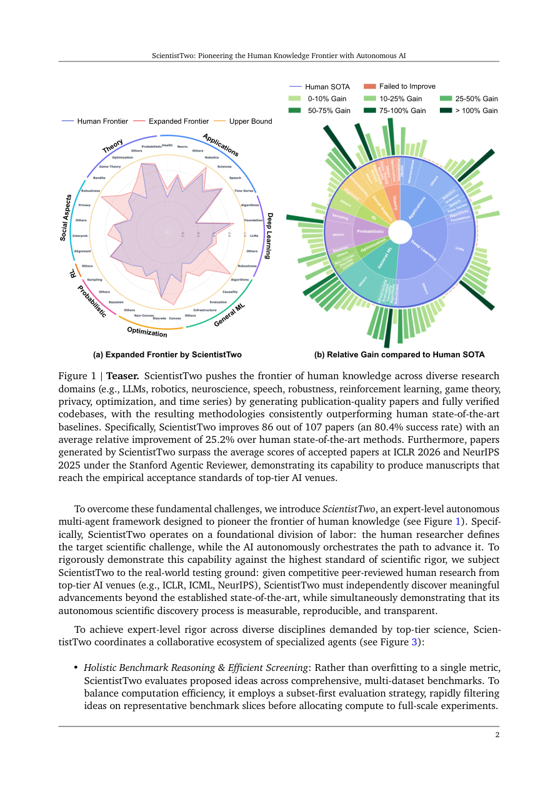

#1
★ 8/10
ScientistTwo: Pioneering the Human Knowledge Frontier with Autonomous AI
ScientistTwo: Pioneering the Human Knowledge Frontier with Autonomous AI

图 Figure · Page 2 of paper
🎯 （AI 中文深度分析暂不可用：Anthropic API 额度不足。英文栏为论文原文摘要，下方链接均可正常访问。）
Scientific discovery is defined by the ability to identify the boundaries of existing knowledge and venture into unexplored territory
| 维度 | 中文 | English |
|---|---|---|
| ❓ 待解决 的问题 |
（AI 中文深度分析暂不可用：Anthropic API 额度不足。英文栏为论文原文摘要，下方链接均可正常访问。） | Scientific discovery is defined by the ability to identify the boundaries of existing knowledge and venture into unexplored territory. The ultimate vision for AI in science is problem-driven autonomous research: given a fundamental challenge by a human expert, the AI independently navigates the scientific landscape, uncovers theoretical and empirical bottlenecks, and systematically expands the frontier of knowledge. In this paper, we introduce ScientistTwo, a fully autonomous multi-agent framework designed to realize this vision. Specifically, ScientistTwo takes an initial problem as input, establishes state-of-the-art baselines, formulates novel hypotheses, and coordinates specialized agents to orchestrate an end-to-end discovery cycle without human intervention. Moreover, the framework rigorously conducts experiments using diverse datasets and metrics, refines methodologies through automated ablation studies, and validates research findings via a closed-loop simulated peer-review rebuttal engine. To evaluate ScientistTwo's capabilities against the highest standards of human scientific achievement, we benchmark it across papers accepted at top-tier conferences such as ICLR, ICML, and NeurIPS. As a result, ScientistTwo autonomously generates expert-level, publishable papers and fully verified, executable codebases. Its solutions consistently outperform human state-of-the-art models, and achieve higher average review ratings than human-authored papers under automated AI review agents. These results show that ScientistTwo is not merely an assistive tool but an autonomous scientific pioneer capable of pushing the frontiers of human discovery. Project website: https://scientist-two.github.io/ |
| 💡 解决 的亮点 |
（AI 中文深度分析暂不可用：Anthropic API 额度不足。英文栏为论文原文摘要，下方链接均可正常访问。） | See the paper’s original abstract in the "Problem / 背景" row above. |
| 🧪 实验 内容 |
（AI 中文深度分析暂不可用：Anthropic API 额度不足。英文栏为论文原文摘要，下方链接均可正常访问。） | See the paper’s original abstract in the "Problem / 背景" row above. |
| 📊 实验 结果 |
（AI 中文深度分析暂不可用：Anthropic API 额度不足。英文栏为论文原文摘要，下方链接均可正常访问。） | See the paper’s original abstract in the "Problem / 背景" row above. |
| 🏁 结论 | （AI 中文深度分析暂不可用：Anthropic API 额度不足。英文栏为论文原文摘要，下方链接均可正常访问。） | See the paper’s original abstract in the "Problem / 背景" row above. |
| 🔗 论文 链接 |
arXiv: 2609.19644v1 · 📥 PDF | |
⚙️ Method · 方法详解
（AI 中文深度分析暂不可用：Anthropic API 额度不足。英文栏为论文原文摘要，下方链接均可正常访问。）
See the paper’s original abstract in the "Problem / 背景" row above.
🌟 Why It Matters · 为什么重要
（AI 中文深度分析暂不可用：Anthropic API 额度不足。英文栏为论文原文摘要，下方链接均可正常访问。）
See the paper’s original abstract in the "Problem / 背景" row above.